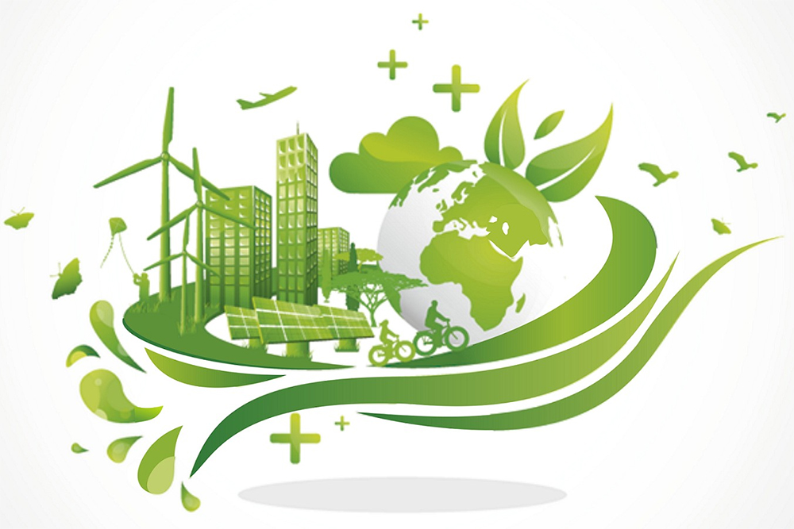

DESARROLLO SUSTENTABLE
El concepto descrito en 1987 fue “Desarrollo sustentable es el desarrollo que satisface las necesidades del presente sin comprometer la capacidad de las generaciones futuras para satisfacer sus propias necesidades”.
El concepto de desarrollado sustentable tiene el objetivo de homogeneidad y coherencia entre el crecimiento económico y material de la población y la explotación de los recursos naturales evitando comprometer la vida en el planeta, sea de los seres humano como de la naturaleza y biodiversidad en la Tierra.
